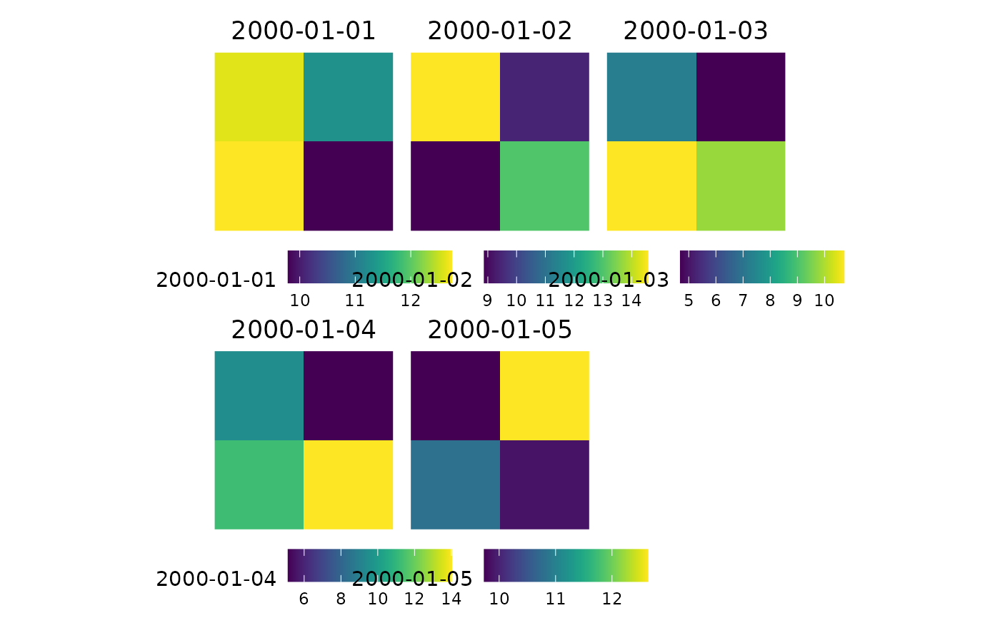
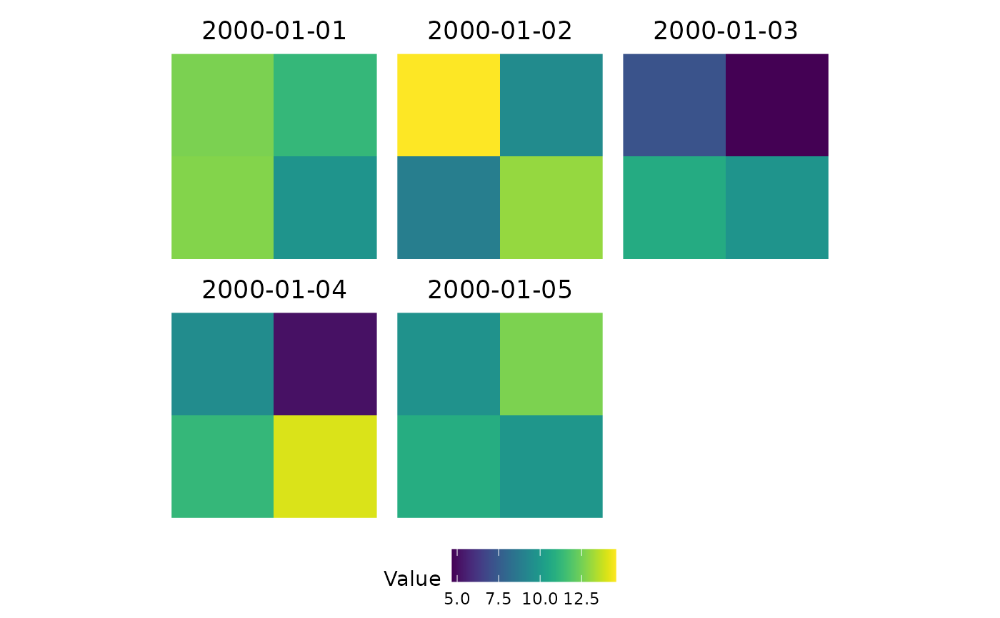

Produces ggplot2 raster maps from an sxts object or a Raster*
object (RasterLayer, RasterStack, or RasterBrick). The function handles
both timeseries layers — where individual time steps are mapped as
separate panels — and statistical layers such as the parameter and
goodness-of-fit rasters returned by basic_stats_nc or
fitlm_nc. Layer names that parse as dates are reformatted
as titles; statistic names are kept verbatim. All rasters are rendered
with viridis colour scales via ggplot2 and composited into a
multi-panel layout by patchwork. A common legend across all panels
can be enforced by setting common_legend = TRUE, which scales the
fill range to the global minimum and maximum of the entire dataset.
Usage
nc_ggplot(
data,
title = FALSE,
legend.title = NA,
common_legend = FALSE,
viridis.option = "viridis",
...
)Arguments
- data
An sxts object or a raster Raster* object (RasterLayer, RasterStack, RasterBrick).
- title
Logical; if
TRUE, layer names are added as plot titles. DefaultFALSE.- legend.title
Character; title for the colour legend. Use
NAto omit. DefaultNA.- common_legend
Logical; if
TRUE, a single common legend is collected across all panels with fill scaled to the global data range. DefaultFALSE.- viridis.option
Character; the viridis colour palette option (
"viridis","magma","plasma", etc.). Default"viridis".- ...
Additional arguments passed to
wrap_plots.
Examples
# Synthetic sxts with 4 cells and 5 daily steps
set.seed(42)
n <- 5
dates <- seq(as.POSIXct("2000-01-01", tz = "UTC"), by = "day", length.out = n)
vals <- matrix(rnorm(n * 4, mean = 10, sd = 2), nrow = n, ncol = 4)
coords <- data.frame(x = c(0, 1, 0, 1), y = c(0, 0, 1, 1))
ts_sxts <- sxts(data = vals, order.by = dates, coords = coords,
projection = "+proj=longlat +datum=WGS84")
nc_ggplot(ts_sxts, title = TRUE)

# With a common legend
nc_ggplot(ts_sxts, title = TRUE, common_legend = TRUE,
legend.title = "Value")
